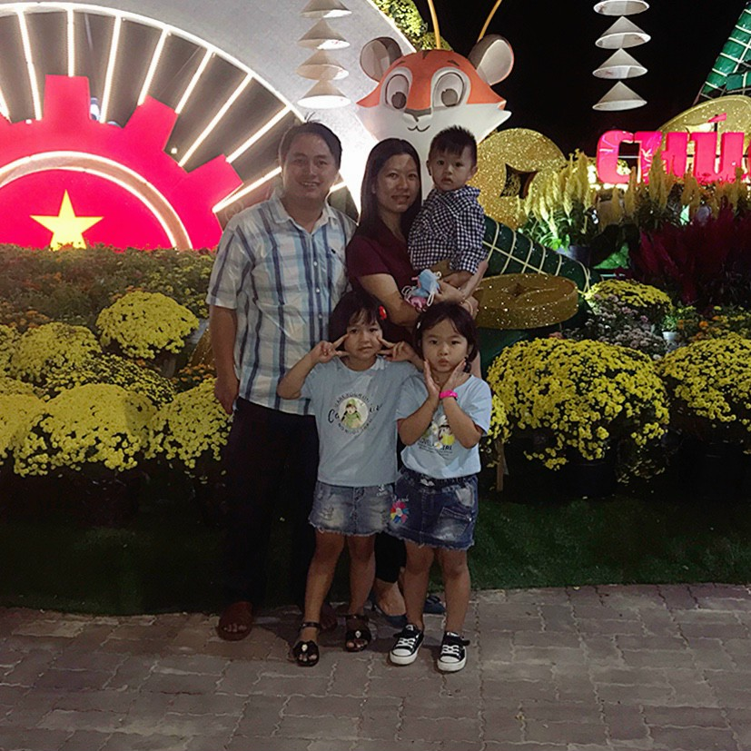

Trong đời, ai ai cũng sẽ gặp phải những tình huống éo le, hoặc phải đứng trước những thách thức mà mình không ngờ đến, khi đó mỗi người đều sẽ có quan điểm và thái độ khác nhau khi đối diện với chúng. Cách mà bạn lựa chọn sẽ quyết định bạn là kẻ chiến thắng hay người thất bại.
